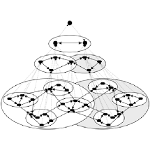
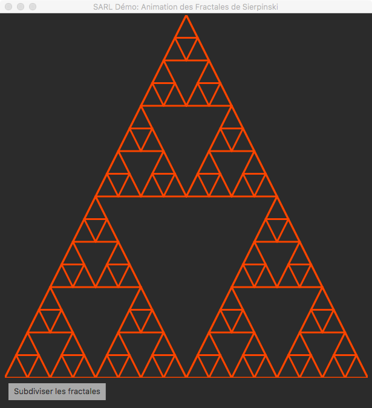
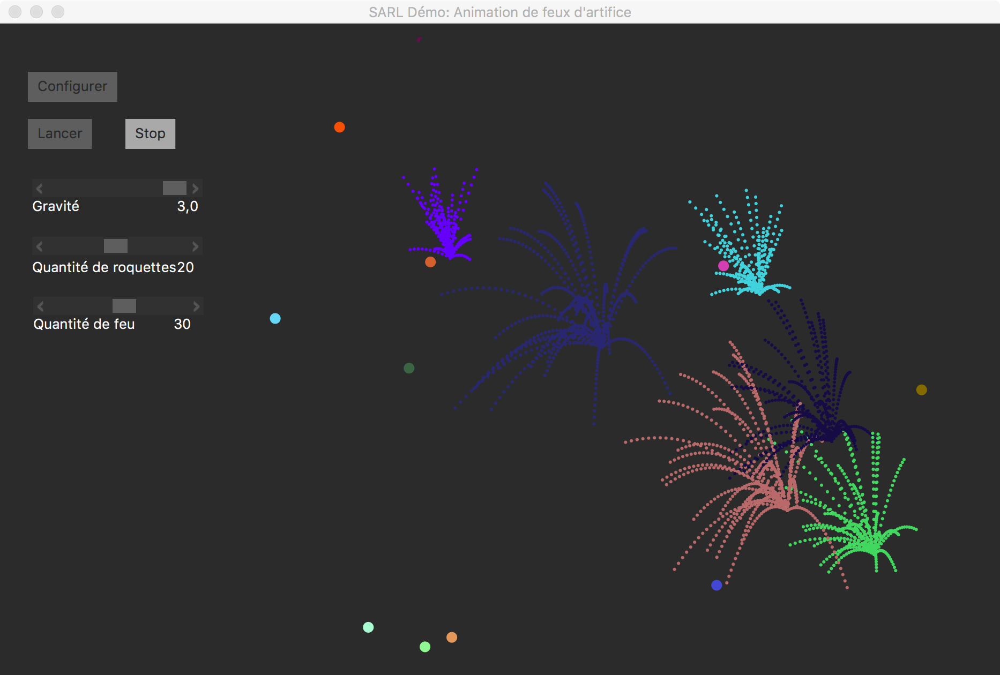
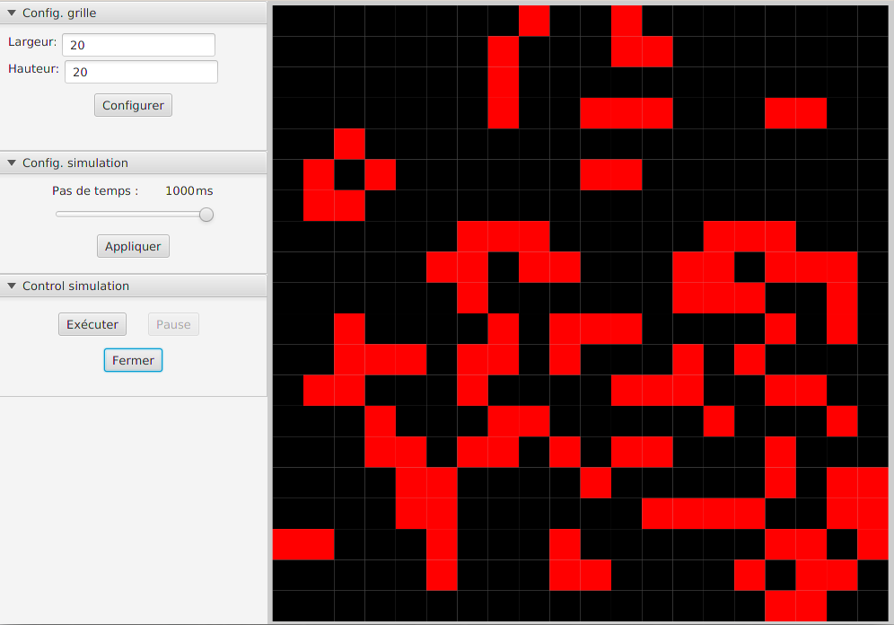
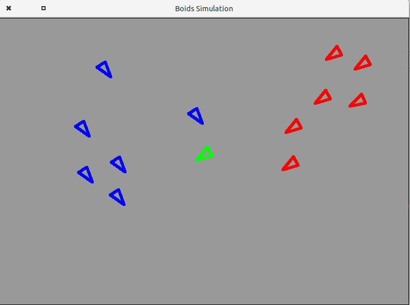

Library of SARL Code Samples
The SARL development environment (a.k.a. SARL product) contains a library of SARL code samples that may be used for creating your own project. This page provides the content this embedded library, and how to create a project from them.
For creating a project based on a code sample, please follow the steps below (assuming that code samples are named "examples" into the SARL product):
- Open the SARL developing environment;
- Open the menu `File` (top left of the menu bar);
- Select the item `New` into the menu;
- Select the item `Examples` into the sub-menu;
- Wait for the opening of the "New Example" dialog box;
- Select the code sample/example that you would like to obtain;
- Click on `Finish` button;
- Wait for the SARL environment to create a new project that contains the code sample.
The following sections provide the content of the library per category.
1. Illustrations of SARL Concepts
|  | A first example of holarchy |
| Creation of complete hierarchy of holons. More info. | |
| A hello-world agent in SARL | |
| A simple agent displaying "Hello" on the console and dying 2 seconds later. More info. | |
| A simple agent decrementing an integer before dying | |
| A first illustration of the concept of task to schedule a sub process doing something from a given behavior. More info. | |
| Agent with a behavior | |
| A simple agent playing an externally described behavior to compute a factorial. More info. | |
 | Agent with a behavior extending an existing behavior |
| A simple example to illustrate the richness of behavior inheritance and corresponding overload in SARL. More info. | |
| Two simple agents in basic interaction | |
| A first agent creates two other agents, the first one counting to 3 before dying and sending message to the second. More info. |
2. Mathematics
|  | Fractals of Sierpinski (JavaFX interface) |
| Sierpinski's fractals is built with triangles which are recursively divided into 3 triangles. In this application each triangle is supported by an agent in a hierarchy of agents. More info. | |
| Two examples of factorial computation | |
| The first demo introduces a single agent computing a factorial, the second one introduces two agents in interaction: the first agent asking the second to compute the factorial value of a specified integer. More info. |
3. Simulation Models
1. Art
|  | Fireworks (JavaFX interface) |
| The goal of this demo is to bring out some fireworks using SARL agents. The application is composed of 4 types of agents. The whole structure is holonic. More info. |
2. Biology and Natural Phenomena
|  | Coway's Game of Life (JavaFX interface) |
| The Game of Life is a cellular automaton devised by the British mathematician John Horton Conway in 1970. More info. | |
|  | Reynolds Boids (AWT interface) |
| Simulation of the Reynolds' Boids based on an AWT user interface. More info. |
4. Templates of Applications
| SARL application with JavaFX | |
| This is a template of SARL application that is using JavaFX as a graphical user interface. More info. |
5. Turotials (code of)
| Auction between holonic members | |
| The auctioneer creates biders in its inner context, and manages the auction. More info. | |
| Ping-Pong event exchanges | |
| Agents are exchanging events with a ping-pong interaction protocol. More info. | |
 | Ping-Pong event exchanges inside a specific space |
| Agents are exchanging events inside a specific space with a ping-pong interaction protocol. More info. |